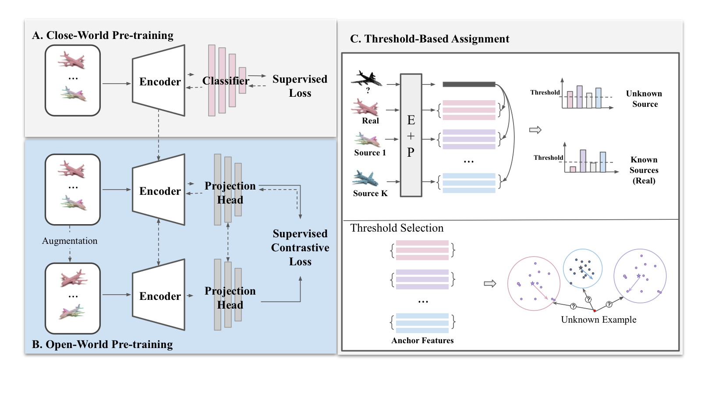

Abstract
To prevent the mischievous use of synthetic (fake) point clouds produced by generative models, we pioneer the study of detecting point cloud authenticity and attributing them to their sources. We propose an attribution framework, FakePCD, to attribute (fake) point clouds to their respective generative models (or real-world collections). The main idea of FakePCD is to train an attribution model that learns the point cloud features from different sources and further differentiates these sources using an attribution signal. Depending on the characteristics of the training point clouds, namely, sources and shapes, we formulate four attribution scenarios: close-world, open-world, single-shape, and multiple-shape, and evaluate FakePCD's performance in each scenario. Extensive experimental results demonstrate the effectiveness of FakePCD on source attribution across different scenarios. Take the open-world attribution as an example, FakePCD attributes point clouds to known sources with an accuracy of 0.82-0.98 and to unknown sources with an accuracy of 0.73-1.00. Additionally, we introduce an approach to visualize unique patterns (fingerprints) in point clouds associated with each source. This explains how FakePCD recognizes point clouds from various sources by focusing on distinct areas within them. Overall, we hope our study establishes a baseline for the source attribution of (fake) point clouds.
Resources
Citation
@inproceedings{QZSBZ24,
author = {Yiting Qu and Zhikun Zhang and Yun Shen and Michael Backes and Yang Zhang},
title = {{FakePCD: Fake Point Cloud Detection via Source Attribution}},
booktitle = {{AsiaCCS}},
publisher = {ACM},
year = {2024},
}